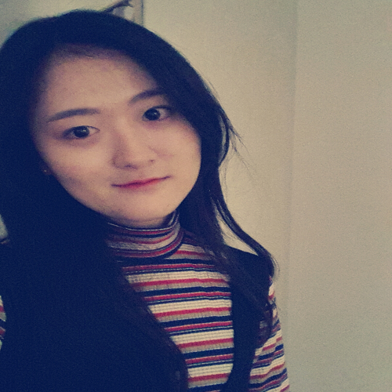

About LeeSSoo
About LeeSSoo
아주대학교 미디어콘텐츠학과 17학번
1998.5.4 이수민
-멋쟁이 사자처럼5기 활동 중
사람들에게 힐링이 되는 서비스를 제공할 수 있는 기획자를 꿈꾸고 있습니다.

'맛있는 물' 프로젝트
교내 아리수 활성화를 통한 페트병 쓰레기 줄이기 프로젝트
아리수 음용이 저조한 이유가 특유의 맛에 있다는 점에 착안하여 음수대 옆에 차(茶)가루 디스펜서를 설치하여 개인물병으로 아리수에 가루를 타 먹게 하는 프로젝트인 ‘맛있는 물’프로젝트는 교내에 설치된 아리수 음수대의 사용률은 높이고, 매점에서 발생하는 생수 페트병량을 줄이기 위한 프로젝트입니다.
Use Difference
'자아'를 주제로한 스톱모션 작품
남들과 달리 비대칭적인 몸을 가진 주인공이 자신의 역할을 알아가는 과정을 그린 스톱모션 작품입니다.